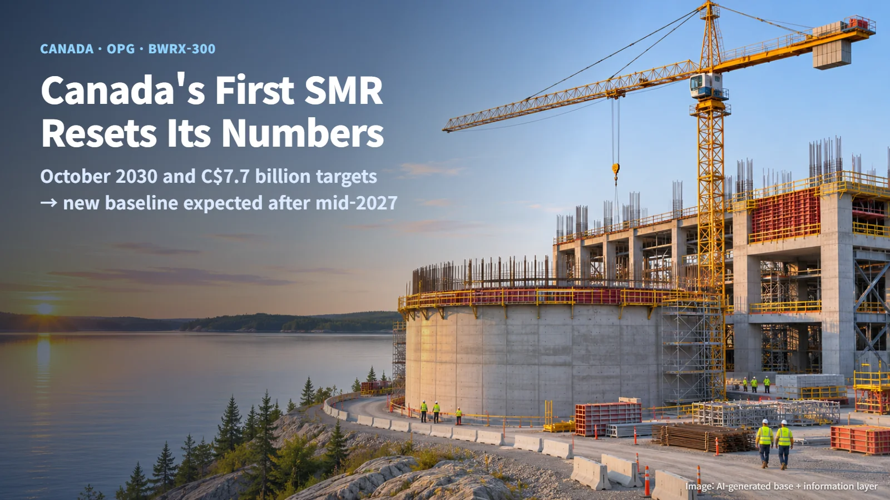
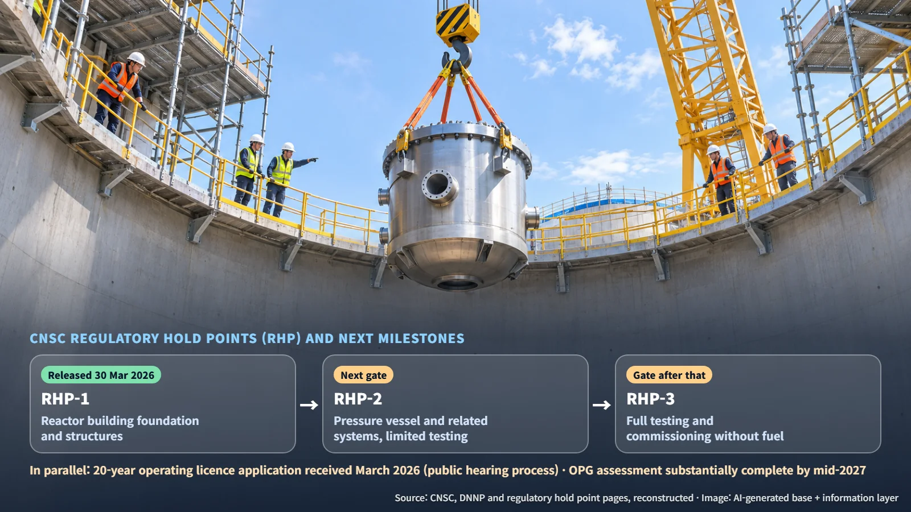

Canada · OPG · BWRX-300
Canada's First SMR Recalculates Its October 2030 and C$7.7 Billion Targets: Inside the Darlington BWRX-300 Review
OPG says the first Darlington BWRX-300 will be challenged to meet its October 2030 and C$7.7 billion targets. What the budget covers, and which regulatory gates come next.
Small modular reactors (SMRs) promise to add power by building several compact reactors on one site. Canada's first SMR is now under construction, and its owner has announced a full review of the project's schedule and cost. This post walks through what is driving the review, what the C$7.7 billion figure actually covers, and which milestones to watch next.

What OPG Announced: An October 2030 Target, a C$7.7 Billion Budget, and a Full Review
In its third-quarter results on 10 November 2026, Ontario Power Generation (OPG) said it expects that the first unit of the Darlington New Nuclear Project (DNNP) will be challenged to meet the existing October 2030 commercial operation target and the C$7.7 billion budget.
The project sits on the existing Darlington nuclear site in Clarington, Ontario. The chosen design is the BWRX-300, a 300 MWe water-cooled reactor that uses natural circulation. In a natural-circulation design, the coolant moves on its own: heated water rises and cooler water sinks, driven by the difference in density.
The project is now in a comprehensive reassessment. OPG expects to substantially complete this assessment by mid-2027 and plans to provide updates if significant new information emerges. A new commercial operation date and a revised total project cost will come out of that assessment. Construction on site continues in the meantime. What is confirmed today is OPG's judgment that the existing targets are difficult to meet, and the point at which a new baseline is expected.
When Design Is Still Being Finished: How Engineering, Procurement and Construction Connect
OPG points to the cause: ongoing engineering on a first-of-a-kind (FOAK) design is affecting construction execution and supply chain performance. A FOAK design is one being built for the first time, so some design information is finalized while construction is already under way.
The effect travels to the site along a chain:
1. Design to procurement: Drawings and design conditions must be settled before equipment specifications can be fixed for purchase orders. When the design changes, the orders change with it. 2. Procurement to construction: Once fabrication and delivery dates for equipment are set, the site can plan its installation sequence. 3. Construction to schedule and cost: When the installation sequence shifts, the overall schedule and cost assumptions need to be recalculated.
Building a house works the same way. The kitchen layout has to be settled before custom cabinets are ordered, and the cabinets have to arrive before the finishing work can start. That is why OPG's assessment covers design maturity and completion timing, the effect of first-of-a-kind design complexity on construction and procurement assumptions, completion of construction-ready deliverables, market, inflation and geopolitical risks, and the effectiveness of recovery actions.
Site work keeps moving. In the third quarter of 2026, assembly of the cooling water tunnel boring machine and the first concrete placement for the turbine building were completed. Aligning ongoing field work and remaining design tasks on a single schedule is at the heart of the reassessment.
Three Regulatory Hold Points and the Road to Mid-2027
Alongside the schedule, the Canadian Nuclear Safety Commission's regulatory hold points (RHPs) set the pace. A regulatory hold point is a gate: the CNSC verifies that the licensee has fulfilled specific commitments before the next phase of work may proceed. The licensee carries out the commitments, CNSC staff verify them, and the Commission or a delegated authority approves the release.
The three gates in the DNNP construction licence follow the construction sequence:
| Hold point | Activity permitted after release | Current status | |---|---|---| | RHP-1 | Construction of the reactor building foundation and structures | Released 30 March 2026 | | RHP-2 | Installation of the reactor pressure vessel and related systems, with limited testing | Awaiting release; next gate | | RHP-3 | Full testing and commissioning without fuel | Awaiting release; the gate after that |
Source: CNSC, Darlington New Nuclear Project and Regulatory hold points for new reactor facilities (reconstructed)
The order runs from foundations, to pressure vessel installation, to commissioning without fuel. Starting each stage requires both the relevant design handover and the release conditions for its gate, so the design schedule and the regulatory gates form one connected path.
The operating licence process runs in parallel. The CNSC has published an application, received in March 2026, for a 20-year operating licence covering one BWRX-300 and a low- and intermediate-level waste storage structure. The Commission's decision will go through a public hearing process.

The next checkpoints are the results of OPG's comprehensive assessment in mid-2027 and the release of RHP-2. When the new figures arrive, comparing them like for like, with the same scope and the same treatment of interest, will let readers judge for themselves how much the cost of Canada's first SMR has changed.